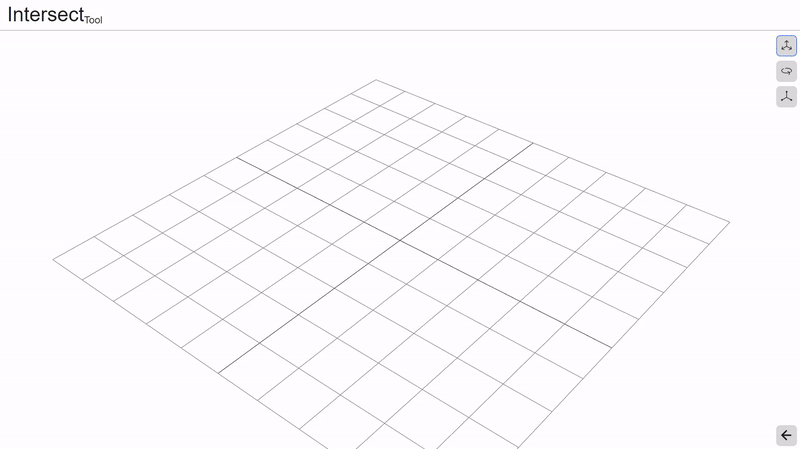
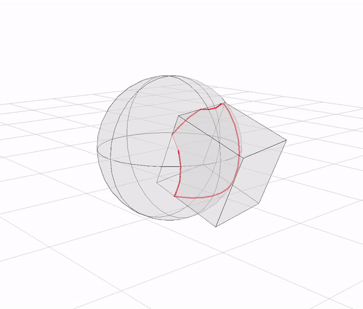

Spending an hour a day doing something that you love is very important to me. I know what it’s like to have a chaotic schedule and, because of this, I want to give people the resources to foster healthy daily habits for their hobbies, whether it be art, athletics, or academics.
I personally host a YouTube channel dedicated to spreading these resources as well as teaching others Constructional Drawing. I contribute to a free and online drawing community named Drawabox which is focused on teaching the fundamentals of art.
As an extension of these contributions, I am developing a website named KavsTools. This is a collection of tools, games, and resources for anyone who wants to learn the fundamentals of art. It is a goal of mine to see this website turn into a platform for developing habits and carving time into chaotic schedules.
 